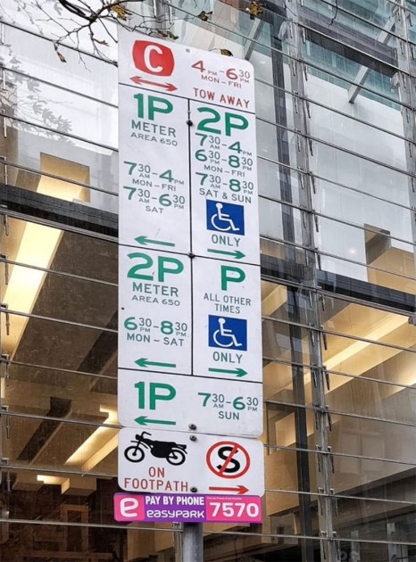

Point your phone at the most chaotic stacked sign in Melbourne. We tell you, in one sentence, whether you can park here — and when you need to leave.

Six signs on one pole. Each one overrides the last. Half the rules only apply on certain days, between certain hours, on the correct side of the post. Get it wrong and the tow truck doesn't ask.
Open ParkProof. Snap the sign. Get a plain-English verdict. No account. No subscription. No telling us where you live.
Point your phone at the pole. Include every sign in the frame, even the weather-faded ones. ParkProof works with stacked, tilted, partial and overcast shots.
Claude vision parses every panel, normalises Australian sign grammar, and reconciles overrides — clearway over time-limit over permit zone, the works.
One sentence: "You can park here, until 4:00 am Saturday — 5h 56m of overnight parking before the 4am tow-away." Plus the bullet-list of rules we relied on, so you can double-check before walking away.
Australian signs override each other in non-obvious ways. The "2P time-limit" says you have until 4:30 pm. But the clearway underneath says tow-away from 4:00 pm on weekdays. The real cap is 4:00 pm — not 4:30 pm. That's the kind of read most apps get wrong.
Other parking apps remind you about meters you paid through them. ParkProof reminds you about any parking session — the 2P free spot you grabbed at lunch, the permit-zone bay you scanned this morning. Layered push notifications, fired by a real scheduler the moment your bay is about to expire.
If a council officer disagrees with our read, ParkProof exports the session as a cryptographically signed PDF — timestamped, GPS-anchored, sign-photo included. We even draft the appeal letter for you.
Not legal advice. The signature proves the record wasn't altered after it was saved — how a council or court weighs that record is their call.
Saved sessions and reminders work offline. There's no account, no sign-up, no telemetry. Your photos and verdicts live on your phone unless you explicitly opt into cloud sync.
Open the URL, take a photo, get an answer. No email, no phone number, no Apple/Google sign-in required.
Sessions, photos and verdicts are persisted to your phone's local storage. The vision API call is the only thing that leaves.
Want sessions across devices? Sign in with Apple or Google and we sync via Cognito. Delete your account and every byte is gone.
Free, anonymous, and faster than reading the sign yourself. The next time you're staring at six signs on one pole — let us read them.
Snap a session